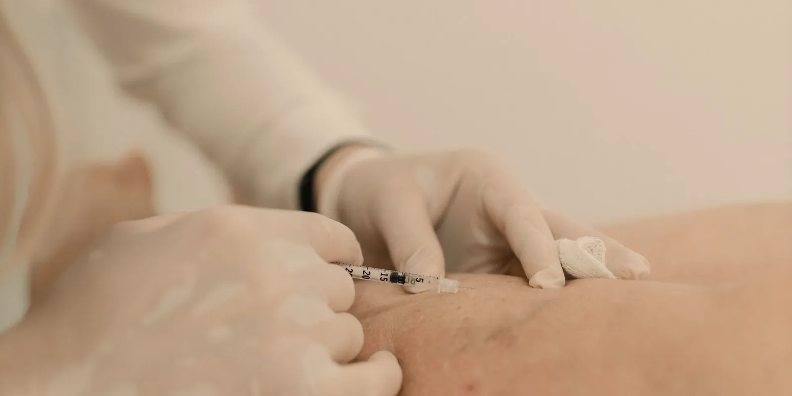

¿Venas o várices? Cómo saber si las que se te notan son un problema
Te miras la pierna y ves una vena que antes no se notaba tanto. La duda de fondo es siempre la misma: ¿venas o várices? Esto es lo que puedes revisar tú misma antes de decidir si vale la pena una valoración.

En Medellín el calor es parejo todo el año, y entre las horas de pie en el trabajo y las tardes largas es normal que las piernas muestren más venas de las que uno recuerda. Pero notar una vena no es lo mismo que tener una várice. La diferencia entre venas o várices casi siempre está en tres cosas que puedes mirar tú misma: el tamaño, el color y si la vena sobresale al tacto. Si lo que ves se parece más a una telaraña fina y rojiza, puede que estés comparando con el artículo equivocado: esa duda específica la resolvemos en Várices vs. arañitas vasculares: ¿son lo mismo?. Y si ya tienes casi la certeza de que es várice y quieres saber qué opciones hay, la guía completa está en el tratamiento de várices en Medellín.
Venas o várices: la diferencia está en el tamaño y el color
La Sociedad de Cirugía Vascular de Estados Unidos describe las várices como venas grandes y abultadas, que pueden verse justo bajo la piel o un poco más profundas, y que suelen venir con síntomas: picazón, ardor, pesadez o hinchazón, casi siempre peor al final del día. Las venas que solo se notan como líneas finas, rojas o azuladas, sin relieve, corresponden más bien a lo que la clasificación clínica CEAP llama C1: telangiectasias o venas reticulares. Esa misma clasificación ubica la várice en la categoría C2: una vena dilatada y palpable, distinta de la C1.
Esa distinción, aunque suene a dato técnico, es justo lo que separa una vena marcada de una várice real. Aquí nos quedamos en ese primer paso, el de mirarte la pierna en casa; si ya sabes que tienes un problema venoso y quieres entender el proceso completo que sigue un médico para confirmarlo, eso está aparte en cómo se diagnostica un problema venoso.
Qué mirar en casa: una guía rápida de autoexamen
Antes de sacar conclusiones, revisa esto con calma, de pie y con buena luz:
- Tamaño: ¿es una línea delgada como un hilo, o un cordón grueso que se nota al pasar el dedo?
- Color: rojo o violeta claro suele ser telangiectasia; azul oscuro o verdoso, vena reticular o várice.
- Relieve: las várices sobresalen y se sienten blandas, como un cordón bajo la piel; las arañitas quedan planas.
- Si cambia con el día: una vena que se nota más después de varias horas de pie o sentada, y que mejora al acostar las piernas en alto, apunta más a un problema de retorno venoso.
- Dolor o pesadez: las várices pueden doler, arder o sentirse pesadas; una vena solo estética normalmente no molesta.
- Antecedentes familiares: si tu mamá o tu abuela tuvieron várices, tienes más papeletas de desarrollarlas tú también.
En Seravena preferimos no decidir solo con la vista: el eco doppler muestra si hay reflujo por debajo de la piel, algo que ningún espejo revela.
Esto no significa que toda vena que se nota necesite una cita. La mayoría de las telangiectasias son solo un asunto estético. Pero cuando el autoexamen te deja con más dudas que certezas, ya no se resuelve mirando con más atención: ahí entra una opinión profesional.
Señales que van más allá de lo estético
Hay un grupo de síntomas que, junto con la vena visible, sí merecen una revisión pronto. Si notas piernas hinchadas al final del día que no bajan con el descanso, cambios en el color o la textura de la piel alrededor del tobillo, o picazón persistente sobre la vena, puede tratarse de algo más que una cuestión de apariencia. El artículo Insuficiencia venosa crónica: síntomas que no debes ignorar entra en detalle en esas señales.
Ninguna de estas señales, por sí sola, significa algo grave. Pero juntas sí valen una consulta.
Cómo es una valoración por várices en Medellín
Si decides consultar, la valoración suele incluir revisar tus piernas de pie, preguntar desde cuándo notas la vena y si cambia con el día, y casi siempre un eco doppler venoso para ver lo que el ojo no alcanza. En Seravena ese estudio se hace en el mismo consultorio de El Poblado, sin que tengas que ir a otro lado el mismo día. La clínica atiende solo de forma particular, sin EPS ni prepagada, así que agendas directo por WhatsApp o desde contacto, sin esperar una remisión.
Si todavía no estás segura de qué estás viendo, hay un ejercicio simple que ayuda a decidir: toma una foto de la vena en la mañana y otra en la noche, en dos días distintos, y anota si dolió o cambió de tamaño. Esa comparación es justo lo primero que te va a preguntar un especialista vascular, y adelantarla te ahorra tiempo en la cita.
Preguntas frecuentes
¿Cómo sé si lo que tengo es una vena normal o una várice?
Mira el tamaño y el relieve: una várice sobresale y se siente como un cordón grueso al pasar el dedo. Una vena que solo se ve como una línea fina, plana y sin dolor, casi siempre es solo estética.
¿Las venas que se ven en las piernas siempre son várices?
No. Muchas personas tienen venas o capilares visibles por tener la piel clara o delgada, sin que eso signifique un problema venoso. Las telangiectasias (arañitas) y las venas reticulares se ven, pero no sobresalen ni duelen como una várice.
¿Por qué se me notan más las venas en algunos días que en otros?
Las horas de pie, el calor, la ropa ajustada o un día muy sedentario pueden hacer que las venas se vean más marcadas hacia la tarde. Si mejoran al acostar las piernas en alto, suele ser algo pasajero; si no cambian, vale la pena revisarlo.
¿Cuándo debo preocuparme por una vena que se me nota?
Cuando además de verse, la vena duele, pesa, pica, cambia de color la piel alrededor, o aparece hinchazón que no baja con el descanso. Esas señales, y no solo la apariencia, son las que indican que conviene una valoración vascular.
Fuentes
- Varicose Versus Spider Veins: Understand the Difference and Know When to Seek Treatment Help. Society for Vascular Surgery, 2020.
- Clinical Classification of Chronic Venous Insufficiency (clasificación CEAP). MSD Manual, versión para profesionales, 2026.
- Várices. MedlinePlus, Biblioteca Nacional de Medicina de EE. UU. (NIH), 2023.